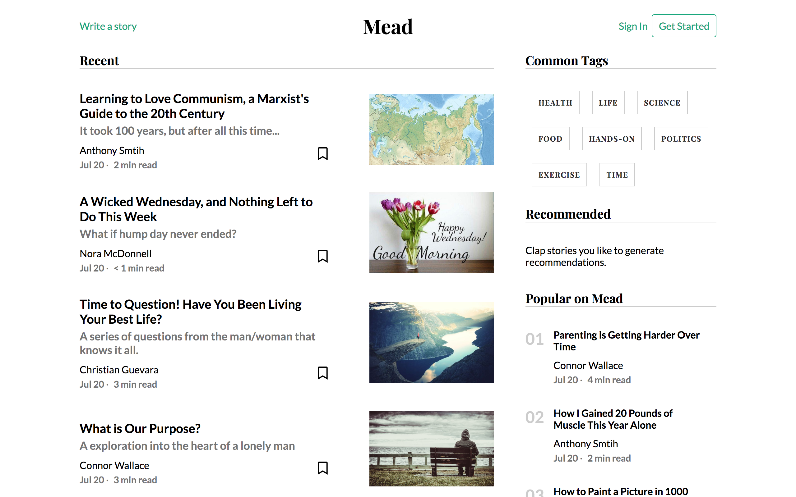
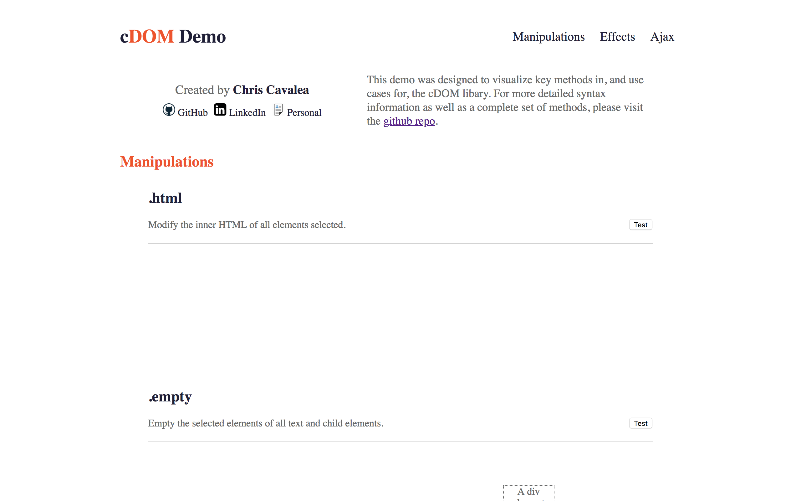

My name is Chris Cavalea and I am a relentless, results-oriented problem solver who enjoys creating interactive and performant interfaces. I believe in learning through failure, and the endless power of listening. By applying these beliefs to my projects, I am able to develop myself as I develop the code.

A JS libray that simplifies and enhances DOM manipulation. Capitalizing on ES6 syntax, cDOM provides useful wrappers around HTML elements and added functionality such as AJAX requests.

App Academy
1000-hour rigorous web development course with ~3% acceptance rate.
George Washington University
Bachelor of Business Administration, Concentration in Finance
GPA: 3.9
Front End
Back End
Other